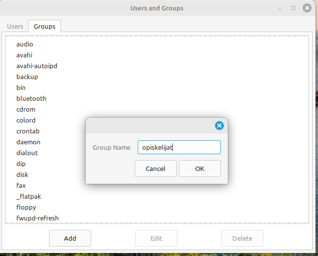
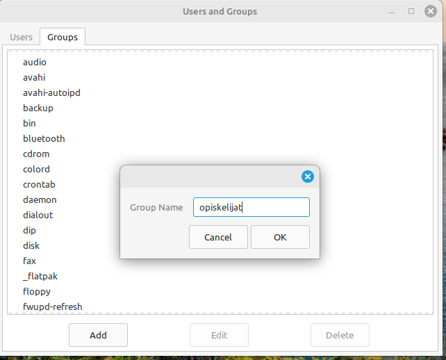
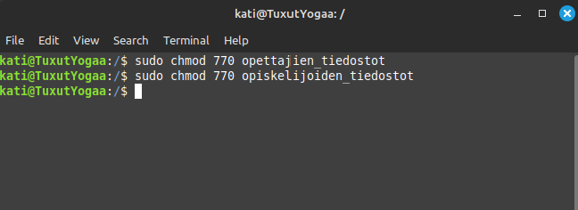
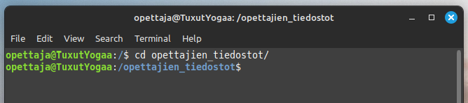
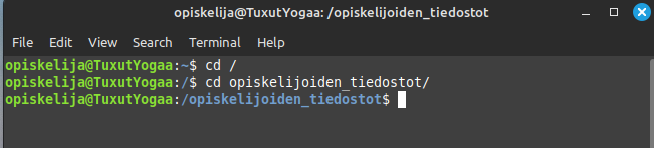
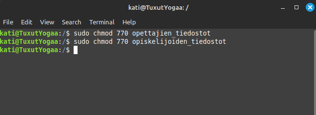
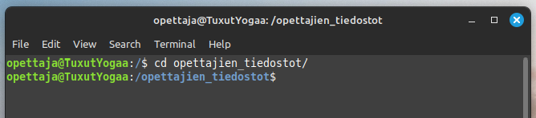
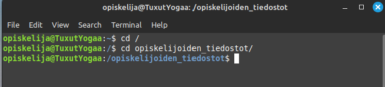
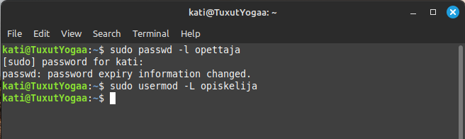
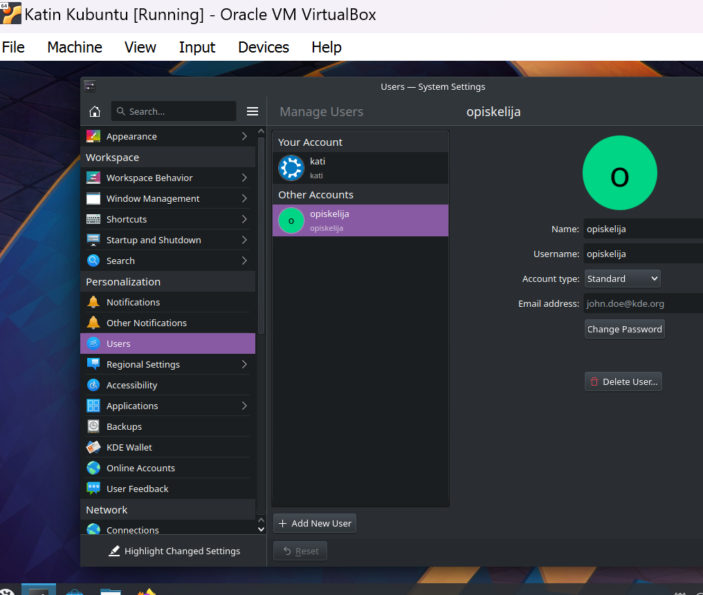

Tehtävä 4.1: Käyttäjähallinta
Perehtyminen käyttäjänhallintaan sekä komentoriviltä että käyttöliittymän kautta
1. Kahden uuden käyttäjän luominen. (opettaja ja opiskelija)
Toisessa käytin luomisessa komentorivia ja toisessa graafista käyttöliittymää. Samalla käyttäjät saivat myös kotihakemistot.


2. Ryhmäliitännät
Lisäsin toisen käyttäjistä ryhmään nimeltä "opiskelijat" ja toisen ryhmään "opettajat". Käytin sekä komentoriviä, että graafista käyttöympäristöä.

 


3. Hakemistot ja oikeudet
Loin hakemistot “opiskelijoiden_tiedostot” ja "opettajien_tiedostot", joille annoin oikeudet vain asianosaisille ryhmille. Varmistin kokeilemalla molemmilla käyttäjillä, että oikeudet ovat voimassa. Käytin molemmissa komentorivia.

 





4. Lukitse tunnukset
Lukitsin molemmat tunnukset väliaikaisesti. Graafinen käyttöliittymä ei tarjonnut vaihtoehtoja. Tarkastin sekä Linux Mintissä, että Kubuntun graafisessa ympäristössä ja siellä oli mahdollisuus ainoastaan joko lisätä käyttäjä tai poistaa. Kävin asiaa läpi myös opettajan kanssa. Laitan kuitenkin kuvakaappauksen Kubuntun graafisesta ympäristöstä. Käytin lopulta pelkkää komentoriviä, mutta toteutin lukitsemisen käyttämällä eri komentoja.
 